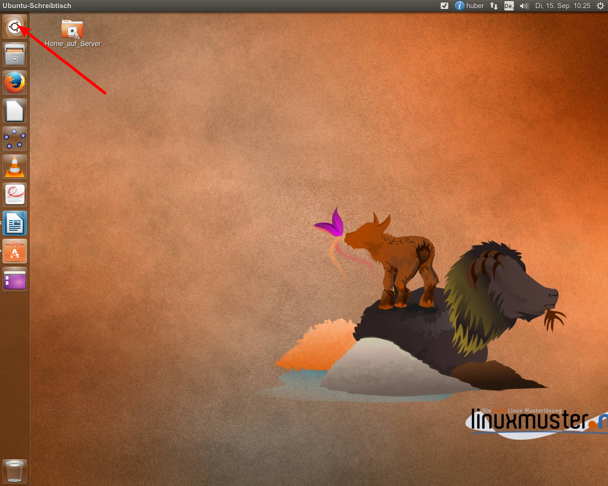
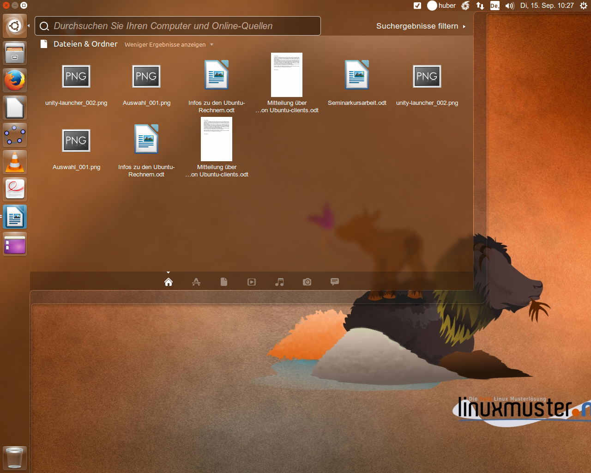

Verwendung der Ubuntu-Rechner¶
Wie finde ich die installierte Software?¶
Ein paar wichtige Programme finden Sie in der Leiste am linken Bildrand. Ein einfacher Klick auf die Icons startet die entsprechenden Programme. Wenn Sie ein bestimmtes Programm suchen möchten, dann klicken sie auf das Ubuntusymbol oben links.
Daraufhin erscheint eine halbdurchsichtige Eingabemaske, wo sie nach Programmen suchen können. Es reicht meist bereits aus, wenn Sie nur die ersten beiden Buchstaben des Programmnamens eingeben. Ubuntu bietet Ihnen darauf hin eine Auswahl an Programmen an. Ein einfacher Klick auf das entsprechende Symbol startet die Anwendung:
Sie können sich eine erweiterte Ansicht anschauen, indem sie auf „weitere „Ergebnisse anzeigen klicken“ (direkt unter dem Eingabefeld).

Am unteren Rand des Auswahlmenus können Sie die Auswahl eingrenzen (gaue Symbole). Das Suchfeld ermöglicht es Ihnen auch, zum Beispiel nach Textdateien auf ihrem Account zu suchen.
Gibt es noch andere Software?¶
Der „Appstore“ von Ubuntu bietet eine Fülle von Software für verschiedene Fächer oder Anwendungsbereiche an. Wenn Sie sich einen Überblick verschaffen möchten, öffnen Sie das „Ubuntu Software-Center“ nach dem gleichen Schema wie oben erläutert.

Hier können Sie gezielt nach einer bestimmten Software suchen oder einfach etwas stöbern.
Wie installiere ich Software?¶
Aus Sicherheitsgründen ist es den Benutzern nicht gestattet, Software zu installieren. Wenn Sie eine bestimmte Software benötigen, fragen Sie Hu (huber@copernicus-gymnasium.de). Windowssoftware lässt sich leider nicht ohne Weiteres auf einem Ubuntusystem installieren. Aber in vielen Fällen finden Sie im Ubuntu Software-Center eine gleichwertige Alternative, die zudem noch den Vorteil hat, dass sich kostenlos ist und keine teuren Lizenzkosten zu entrichten sind.
Ist iTalc auf den Ubuntu-Rechnern installiert?¶
Nein, aber eine entsprechende Alternative, die Epoptes heißt. Epoptes lässt sich wie andere Software auch über den oben beschriebenen Weg starten. Die Funktionsweise entspricht derjenigen von iTalc. Allerdings können sie mit Epoptes nur Ubuntu-Rechner überwachen, sodass sie sich in 218 entscheiden müssen, welches Betriebsystem die Schüler booten sollen. Möchten Sie mit Windows XP arbeiten, benutzen Sie wie bisher einfach iTalc.
Software auf den Ubuntu-Rechnern¶
Auf den Ubuntu-Rechner in 219 und 218 ist eine große Auswahl an verschiedener Software bereits vorinstalliert:
Office¶
- calibre (E-Book Reader/Converter)
- Dokumentenbetrachter (Ersatz für Acrobar-Reader)
- LibreOffice 5
- pdf-shuffler (PDF-Dateien manipuliern)
- scribus (DTP-Programm)
- tipp10_2.1 (Schreibmaschinentrainer)
Audio/ Video¶
- arista (video-Transcoder)
- audacious (Audio-Player)
- audacity (Audioschnitt)
- cinerella (quasi-professionelle Videoschnittsoftware)
- DeVeDe (DVD-Authoring-Software)
- Easytag (Taggen von Audiodateien)
- gnome-mplayer (Media-Player)
- guvcview (Webcam…)
- handbrake (Video/Audio-Konverter)
- kazam (Desktopvideos und Bildschirmfotos)
- openshot (Videoschnitt)
- soundconverter (Audio-Konverter)
- sound-juicer (CD Ripper)
- totem (Media-Player)
- vlc (Media-Player)
Grafik¶
- converseen (Multiconverter für Bilder)
- Dia (Zeichnen von Diagrammen)
- freemind (Mind-Map)
- gimp (Grafikprogramm)
- inkscape (Vektor-Grafikprogramm)
- labyrith (Mind-Map)
- shutter (Screenshots machen)
Naturwissenschaften/ Informatik¶
- AppInventor (Informatik-Programmieren)
- Arduino (Informatik-Programmieren)
- Bluej-Bluej-311 (Informatik-Programmieren)
- DynaGeo (Mathematik und Geometrie))
- filius (Netzwerksimulator)
- geogebra44 (Mathematik und Geometrie)
- greenfoot-230 (Informatik-Programmieren)
- jfractionlab (Bruchrechentrainer)
- scratch (Informatik-Programmieren)
- scratch2 (Informatik-Programmieren)
- spatialcommander (geographisches Informationssystem)
- stellarium (Planetarium-Programm)
- tilem (Texas Instruments Emulator)
Sonstiges¶
- Chromium-browser (Linux-Variante von Chrome)
- graphstat4 (Statistikprogramm)
- Java8 (Java)
- p7zipfull (Packprogramm)